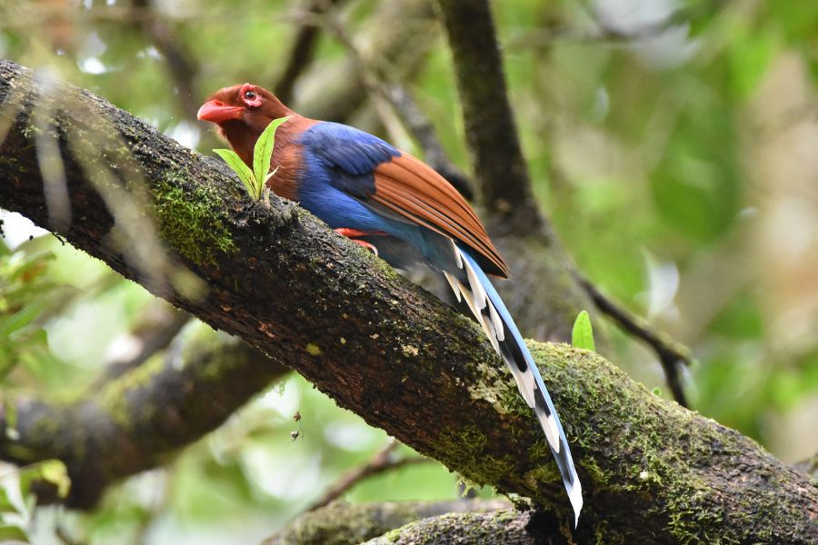
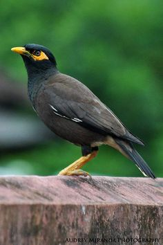
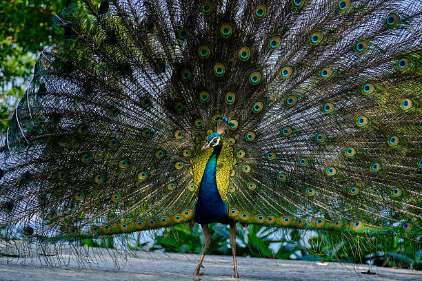

Birdwatching Paradise

Sri Lanka's forests and wetlands host over 430 bird species including many endemics. Sinharaja, Kitulgala and Horton Plains are top spots for birders.
Best Practices
Bring binoculars, a local guide, and maintain quiet to increase your chances of sightings.

